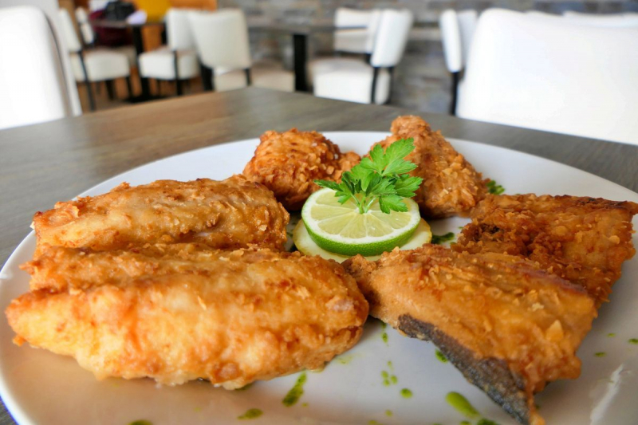

Morreia (Fried Moray Eel)

Morreia is a dish that involves the preparation of eel by first brining it and then cutting it into small pieces. These pieces of eel are then fried until they become crispy and crunchy. To enhance the flavor of Morreia, commonly used ingredients include salt, bay leaf, chopped garlic, ground black pepper, lemon juice, hot sauce, and vinegar. Morreia origin from Portugal and is a perfect example of Portuguese influences on Cape Verdean cuisine.
Ingredients
- 1 Moray eel (cleaned and chopped into small portions)
- Flour for coating
- 2 tsps White pepper
- 2 cups Vegetable Oil (for frying)
- Sea salt
Instructions
- Soak the pieces of eel in a light brine (salted water) for about 20 minutes, then dry thoroughly with kitchen towels or cloth.
- Heat up the vegetable oil in a large frying pan and mix the flour and white pepper onto a plate.
- When the oil is hot, dip the portions of eel in the flour, shaking to remove excess flour and gently drop in the frying pan. Do not over crowd the pan and turn the pieces of eel several time until they get a golden colour. Do not be afraid of over frying, eel is fairly fatty and will be able to take it.
- Remove the pieces of eel and dry them on kitchen towels and serve immediately.
Return To Main Page